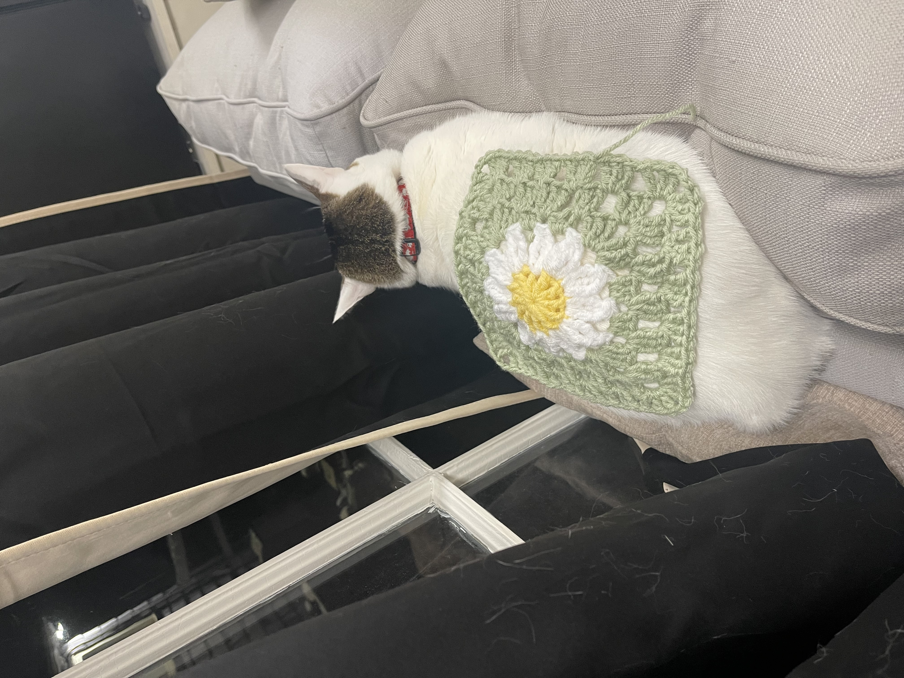

I decided to make this blanket based on this inspo picture I found on Pinterest. I decided to skip the 3D elements that the inspo picture has because it was too much work. I made the flower granny squares with this pattern.
I used a blanket I already had to plan the dimensions of the final product. The blanket ended up being 6 x 9 granny squares.
Obviously making the individual granny squares took the longest, and since I started this project during during the school year, it took way longer than normal and ended up stretching from the middle of fall semester 2024 to beginning of spring sem 2025.
Sewing up the squares is tedious for most people, but I actually really enjoy that step. Once I put the whole thing together, I thought it would look cleaner/cuter with a lacey edge, so I picked a border pattern off of (of course) Pinterest.


The worst part of this and every crochet project is weaving in the ends, and after literal hours of tucking in the loose ends you get from switching colors or finishing rows, the blanket was done!
After not-so subtly hinting that she liked the blanket several times throughout my creation process, I decided to gift the blanket to my twin. :)